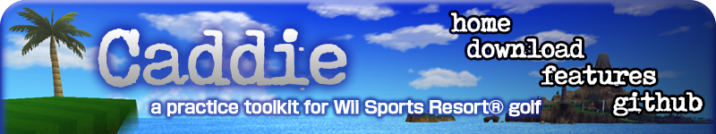
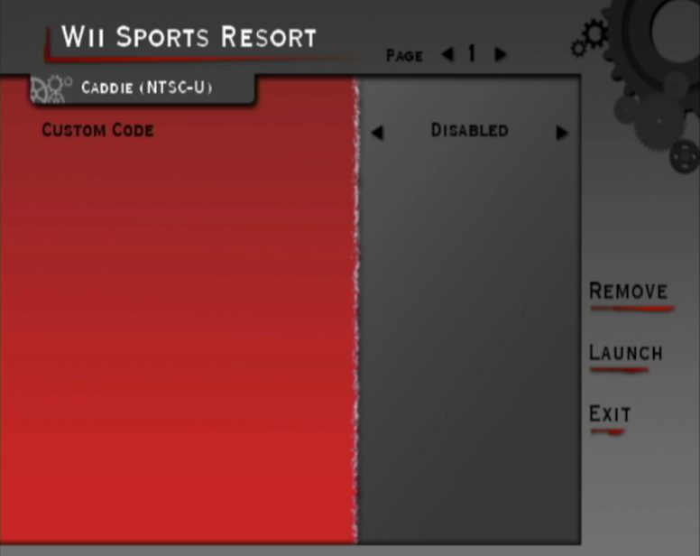
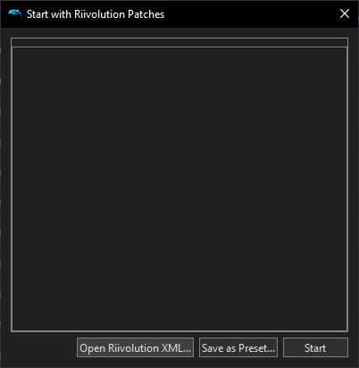
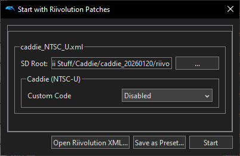

|
 |
Downloadscaddie_20260120.zip - includes all supported regions (NTSC-U and PAL) Install GuideIf you'd like to run Caddie on an emulator, skip to the Dolphin instructions. Otherwise, the physical requirements are as follows:
1. 2. 3. 4.  Riivolution knows the region of your console, so by default it will only show options for your region. If you're trying to use Caddie with an in-region disc but an out-of-region console, please contact us. 5. Dolphin SetupFor usage with Dolphin Emulator, you will still need to download and extract the ZIP at the top of this page, but none of the other setup instructions listed above apply. Current versions of Dolphin have the Riivolution game patcher built in. This means you can use the provided
patch files without needing to install Riivolution or perform any other setup. Simply right click on Wii Sports Resort
in the Dolphin game list and click  Click "Open Riivolution XML...", then navigate to the "riivolution" folder in the downloaded Caddie files. Select "caddie_NTSC_U.xml" or "caddie_PAL.xml" depending on which region you have. You should see the following:  Dolphin should be able to automatically determine the SD Root. Only change it if it's blank or something looks clearly wrong. Then, set Custom Code to "Enabled" and click "Start". If everything works correctly, Wii Sports Resort will launch with some red text at the top that indicates that Caddie is running. |
| website by cyndifusic © 2026 |